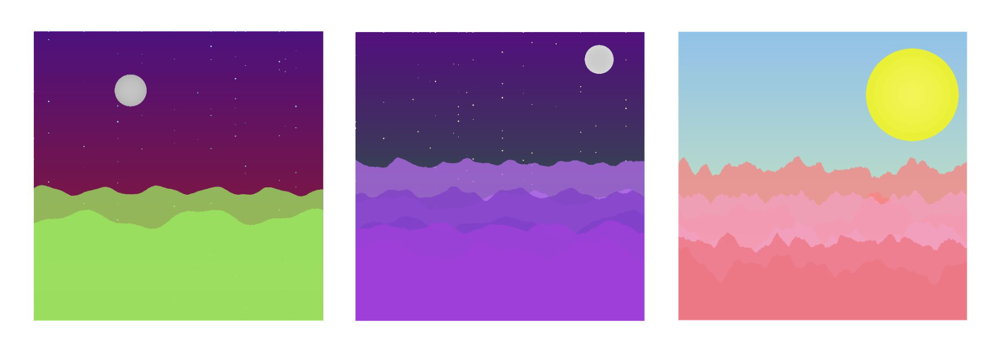
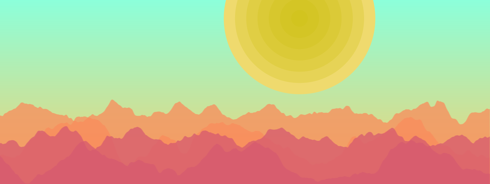
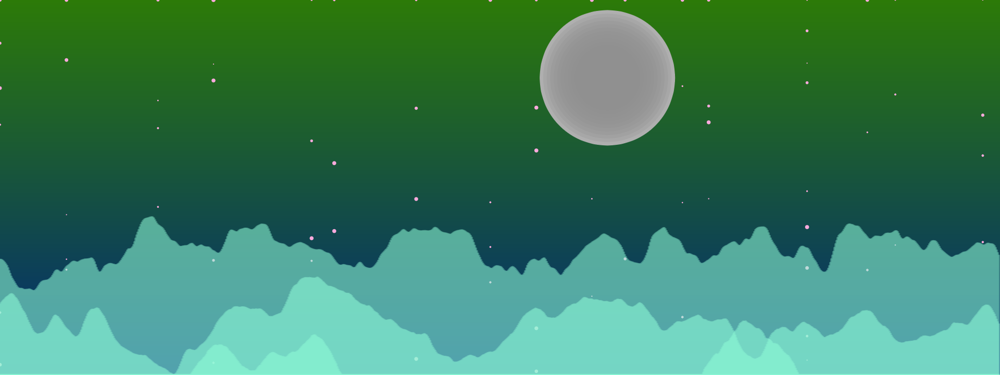
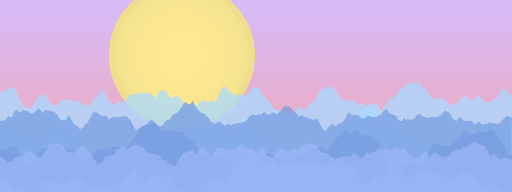

MUSICSCAPES
A creative coding hack at Spotify's devX 2017
keywords: hackathon, data visualization, music streaming

At Spotify's Stockholm hackathon for students I created web app along with my team that generates a landscape based on their Spotify listens.
I coded the visuals in p5.js so that they generate based on the user's last 50 Spotify listens.
More or less mountains appear according to how many songs have been played. Mountains are more jagged or smooth based on the songs' energy. The color of the sky is based on the valence and the mountain color on the predominant key. The landscape is night or day depending on if the songs listened to are minor or major mode respectively.
   See MusicScapes featured on Spotify's Developer site.